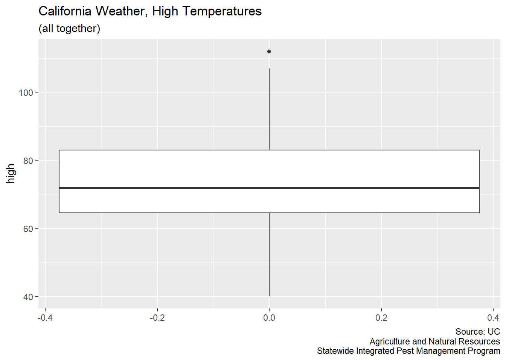
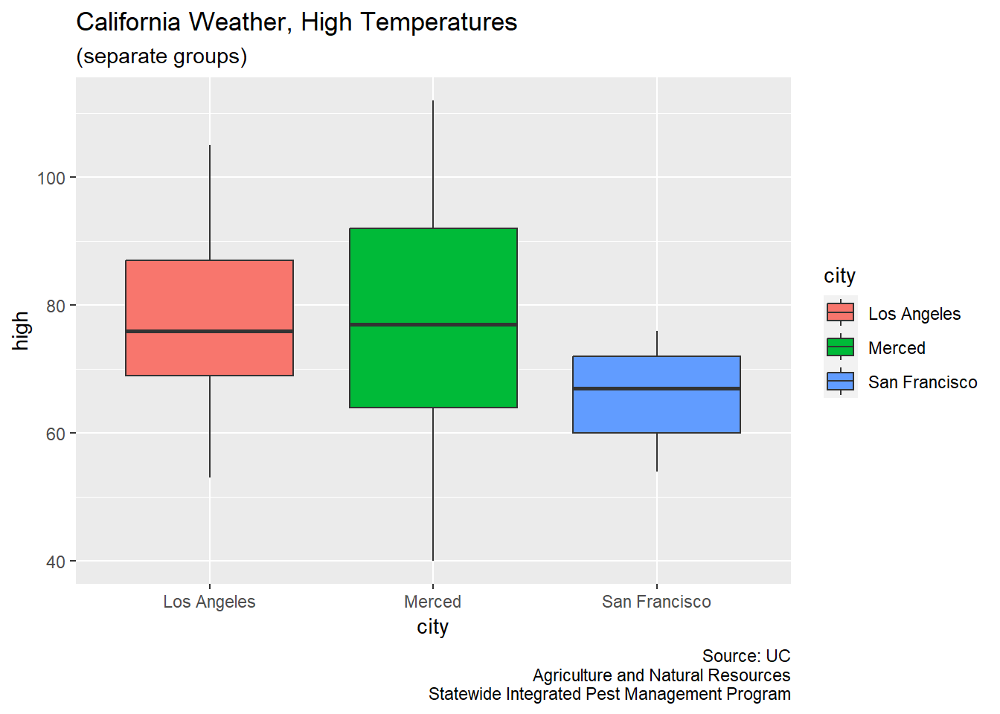

library("tidyverse")I want to create and visualize a simple data set for my Data Science courses (that I teach in California).
Data Source
- University of California
- Agriculture and Natural Resources
- Statewide Integrated Pest Management Program
- https://ipm.ucanr.edu/WEATHER/wxactstnames.html
Fixed-Width Files
Today I learned how to read fixed-width files in the Tidyverse. From there, I simply need to give the columns easy-to-use names.
LA_df <- readr::read_fwf("LA_2022.txt")Rows: 365 Columns: 9
── Column specification ────────────────────────────────────────────────────────
chr (4): X1, X4, X7, X9
dbl (4): X3, X5, X6, X8
time (1): X2
ℹ Use `spec()` to retrieve the full column specification for this data.
ℹ Specify the column types or set `show_col_types = FALSE` to quiet this message.colnames(LA_df) <- c("date", "time", "precipitation",
"check1", "high", "low", "check2", "solar", "check3")
LA_df$city <- "Los Angeles"Merced_df <- readr::read_fwf("Merced_2022.txt")Rows: 365 Columns: 16
── Column specification ────────────────────────────────────────────────────────
chr (4): X1, X4, X7, X12
dbl (11): X3, X5, X6, X8, X9, X10, X11, X13, X14, X15, X16
time (1): X2
ℹ Use `spec()` to retrieve the full column specification for this data.
ℹ Specify the column types or set `show_col_types = FALSE` to quiet this message.colnames(Merced_df) <- c("date", "time", "precipitation",
"check1", "high", "low", "check2")
Merced_df$city <- "Merced"SF_df <- readr::read_fwf("SF_2022.txt")Rows: 365 Columns: 7
── Column specification ────────────────────────────────────────────────────────
chr (3): X1, X4, X7
dbl (3): X3, X5, X6
time (1): X2
ℹ Use `spec()` to retrieve the full column specification for this data.
ℹ Specify the column types or set `show_col_types = FALSE` to quiet this message.colnames(SF_df) <- c("date", "time", "precipitation",
"check1", "high", "low", "check2")
SF_df$city <- "San Francisco"Merge
Some of the weather stations had collected more information than others. That is, if the weather station was newer, then it had more instruments.
For today’s quick exploration, I actually do want to perform a quick rbind, and that requires that each of the 3 data frames have the same number of columns (and should be the same types of information too).
LA_df <- LA_df |>
select(city, date, time, high, low, precipitation)
Merced_df <- Merced_df |>
select(city, date, time, high, low, precipitation)
SF_df <- SF_df |>
select(city, date, time, high, low, precipitation)
CA_weather_data <- rbind(LA_df, Merced_df, SF_df)# write_csv(CA_weather_data, "CA_weather_data.csv")Data Viz
Now, boxplots are easy to make.
CA_weather_data |>
ggplot(aes(y = high)) +
geom_boxplot() +
labs(title = "California Weather, High Temperatures",
subtitle = "(all together)",
caption = "Source: UC\nAgriculture and Natural Resources\nStatewide Integrated Pest Management Program")
CA_weather_data |>
ggplot(aes(x = city, y = high, fill = city)) +
geom_boxplot() +
labs(title = "California Weather, High Temperatures",
subtitle = "(separate groups)",
caption = "Source: UC\nAgriculture and Natural Resources\nStatewide Integrated Pest Management Program")
Sample
For the creation of a classroom example, I want to randomly select 43 observations from the Merced data.
Merced_sample <- sort(sample(Merced_df$high, 43, replace = FALSE))
dput(Merced_sample)c(53, 53, 55, 58, 58, 60, 60, 61, 62, 65, 67, 68, 70, 70, 71,
72, 74, 75, 77, 82, 82, 83, 84, 84, 87, 87, 88, 90, 91, 91, 92,
92, 93, 93, 94, 95, 96, 96, 98, 99, 101, 101, 105)